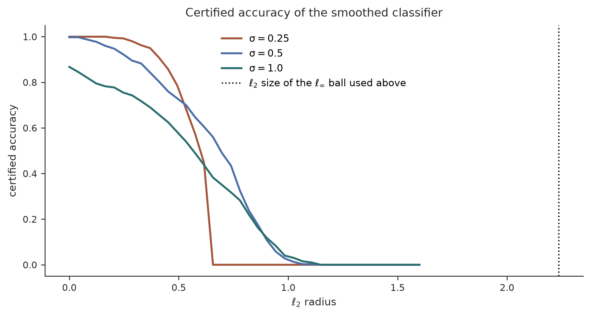

Reported robustness is a minimum over the attacks you thought to run, which makes weak search look like strength, in adversarial examples and in safety training alike.
Author
Diego Filippo Marino
Published
August 14, 2026
A robustness result is a claim about a quantifier. The quantity people care about is
where \mathcal{A} is the finite set of attacks that were actually run. Since \mathcal{A} ranges over a subset of the perturbations \mathcal{B} allows,
\widehat R(f;\mathcal{A}) \;\ge\; R(f)
\qquad\text{always, with equality only if } \mathcal{A} \text{ found the worst case.}
\tag{3}
Equation Equation 3 is not a subtlety. It is the entire epistemic situation of empirical robustness. Every published number is an upper bound on the truth, and the gap is the optimization failure of the evaluator. A defense can lower that gap by being robust, or it can raise the reported number by making the attack search harder without removing a single adversarial example. Athalye, Carlini and Wagner named the second strategy obfuscated gradients and showed that seven of the nine non-certified defenses at one ICLR were doing it (Athalye et al. 2018); Tramèr and coauthors then showed that thirteen more defenses, all of which had run what they called adaptive evaluations, were still overestimating themselves (Tramèr et al. 2020).
This article builds a miniature version of that situation: one dataset, one architecture, three defenses, and a battery of attacks and diagnostics, all in NumPy. Then it does two things the security literature implies but rarely writes down side by side. It compares the empirical numbers against a certificate on the same model, which is the only quantity in the whole exercise that is a lower bound rather than an upper bound. And it applies Equation 3 to safety training, where the same quantifier structure produces the same failure with none of the same vocabulary.
A model and a real attack
The data is a three-class spiral embedded in twenty dimensions, eighteen of which are noise, classified by a small ReLU network. The threat model is \ell_\infty perturbations of size \varepsilon = 0.5, which is large relative to the class separation and therefore genuinely damaging when an attacker finds it.
import numpy as npimport matplotlib.pyplot as pltDIM, CLASSES, EPS =20, 3, 0.5def make_data(rng, n): label = rng.integers(0, CLASSES, size=n) radius = rng.uniform(0.4, 1.0, size=n) angle =2* np.pi * label / CLASSES +3.2* radius core =2.0* np.stack([radius * np.cos(angle), radius * np.sin(angle)], axis=1) core +=0.10* rng.normal(size=core.shape)return np.concatenate([core, 0.5* rng.normal(size=(n, DIM -2))], axis=1), labeldef init_params(rng, hidden=96):return {"W1": rng.normal(size=(DIM, hidden)) / np.sqrt(DIM),"b1": np.zeros(hidden),"W2": rng.normal(size=(hidden, CLASSES)) / np.sqrt(hidden),"b2": np.zeros(CLASSES)}def logits(par, X):return np.maximum(X @ par["W1"] + par["b1"], 0.0) @ par["W2"] + par["b2"]def softmax(z): z = z - z.max(axis=1, keepdims=True) e = np.exp(z)return e / e.sum(axis=1, keepdims=True)def backprop(par, X, y): pre = X @ par["W1"] + par["b1"] hid = np.maximum(pre, 0.0) probs = softmax(hid @ par["W2"] + par["b2"]) dz = probs.copy() dz[np.arange(len(y)), y] -=1.0 dz /=len(y) grads = {"W2": hid.T @ dz, "b2": dz.sum(0)} dpre = (dz @ par["W2"].T) * (pre >0) grads["W1"] = X.T @ dpre grads["b1"] = dpre.sum(0)return grads, dpre @ par["W1"].Tdef train(par, X, y, steps=3000, lr=3e-3, perturb=None, rng=None): m = {k: np.zeros_like(v) for k, v in par.items()} v = {k: np.zeros_like(w) for k, w in par.items()}for s inrange(1, steps +1): batch = X if perturb isNoneelse perturb(par, X, y, rng) g, _ = backprop(par, batch, y)for k in par: m[k] =0.9* m[k] +0.1* g[k] v[k] =0.999* v[k] +0.001* g[k] **2 par[k] -= lr * (m[k] / (1-0.9** s)) / (np.sqrt(v[k] / (1-0.999** s)) +1e-8)return pardef input_gradient(par, X, y):return backprop(par, X, y)[1]rng = np.random.default_rng(0)X_train, y_train = make_data(rng, 3000)X_test, y_test = make_data(rng, 1500)base = train(init_params(rng), X_train, y_train)print(f"clean test accuracy: {np.mean(np.argmax(logits(base, X_test), axis=1) == y_test):.3f}")
clean test accuracy: 0.993
Projected gradient descent is the reference first-order attack: start from a random point in the ball, repeatedly step along the sign of the input gradient, and project back (Madry et al. 2018).
def pgd(par, X, y, eps=EPS, steps=50, rng=None, defense=None, mode="true", eot=1):"""Projected gradient descent against a possibly-defended classifier. mode = "true" differentiates the deployed pipeline, which for a quantizing preprocessor means a gradient of exactly zero almost everywhere. mode = "bpda" runs the forward pass through the defense and the backward pass through the identity. eot > 1 averages the gradient over draws of the defense's randomness. """ rng = rng or np.random.default_rng(0) alpha = eps /10.0 delta = rng.uniform(-eps, eps, size=X.shape)for _ inrange(steps): total = np.zeros_like(X)for _ inrange(eot): point = X + deltaif defense isNone: total += input_gradient(par, point, y)elif mode =="bpda": total += input_gradient(par, defense(point, rng), y)elif defense.__name__=="quantize": total +=0.0# the deployed pipeline is piecewise constantelse: total += input_gradient(par, defense(point, rng), y) delta = np.clip(delta + alpha * np.sign(total), -eps, eps)return X + deltadef fgsm(par, X, y, eps=EPS):return X + eps * np.sign(input_gradient(par, X, y))def random_search(predict, X, y, eps=EPS, tries=400, rng=None):"""Attack with no gradients at all: sample the ball and keep any success.""" rng = rng or np.random.default_rng(1) still_right = predict(X) == yfor _ inrange(tries): cand = X + rng.uniform(-eps, eps, size=X.shape) still_right &= predict(cand) == yreturnfloat(np.mean(still_right))
Three defenses, one of which is real
The three defenses are chosen to instantiate the three sub-types of obfuscated gradients that the original taxonomy identifies, plus the one defense that survived it.
Input quantization rounds every coordinate onto a grid. The deployed function is piecewise constant, so its gradient is zero almost everywhere: this is a shattered gradient, and the matching attack is the backward pass differentiable approximation, which runs the forward pass through the real preprocessor and the backward pass through the identity, exploiting the fact that rounding is close to the identity (Athalye et al. 2018).
Randomized preprocessing adds uniform noise and averages the logits over several draws at inference. The single-sample gradient an attacker computes is then a noisy estimate of the gradient of the deployed classifier: this is the stochastic gradient case, and the matching attack is expectation over transformation, which averages the gradient over draws of the randomness at every step, using \nabla_x \mathbb{E}_t[f(t(x))] = \mathbb{E}_t[\nabla_x f(t(x))]. Whether this actually masks anything turns out to depend on the attack budget, and the experiment below is a useful negative result on that point.
Adversarial training solves the saddle-point problem directly, training on perturbations generated by an inner PGD loop (Madry et al. 2018). It offers no certificate, but it does not hide anything either.
Figure 1: Accuracy under attack for four models. Each row is a defense, each column an attack. The quantizing defense looks strong under the attacks a naive evaluation would run and collapses under the attack matched to its mechanism.
The quantization row is the textbook case, and it is stark. Under PGD, the attack that a paper claiming “we evaluated against a strong iterative white-box adversary” would run, the defense keeps 93% accuracy at a perturbation budget where the undefended model keeps 13%. Under the same attack with the backward pass replaced by the identity, it keeps 17%. The defense removed no adversarial example whatsoever. The input that fools the undefended model still fools the quantized one. What it removed was the attacker’s gradient.
The randomized row does not behave as the taxonomy would lead one to expect, and that is worth reporting rather than smoothing over. Plain PGD already breaks it, and expectation over transformation improves the attack only slightly. The reason is visible when the attack budget is varied.
print(f"{'steps':>6}{'EOT=1':>10}{'EOT=20':>10}")for steps in (5, 10, 50): line =f"{steps:>6}"for eot in (1, 20): adv = pgd(base, X_test, y_test, rng=np.random.default_rng(11), steps=steps, defense=randomize, mode="true", eot=eot) line +=f"{float(np.mean(predict_randomized(base)(adv) == y_test)):>10.3f}"print(line)
Averaging the gradient over twenty draws helps by two to six accuracy points. Running five times as many steps helps by thirty. In this setting the randomness does not mask the gradient, it only adds variance to a descent that has enough iterations to average the variance away by itself. That is a real limitation of the miniature: the defenses that expectation over transformation famously broke operated on high-dimensional images where a single noisy gradient step is far less informative, and they were evaluated with attack budgets small enough that the noise never averaged out.
It also happens to reproduce the most mundane item on the adaptive-attack checklist. Among thirteen defenses examined by Tramèr and coauthors, one was broken from 48% to 0% by nothing more sophisticated than raising the step count and the step size, and the paper repeatedly notes running PGD for 400 steps where the original evaluation used 40 (Tramèr et al. 2020). The cheapest way to tighten Equation 3 is usually to search longer, and it is the one most often skipped.
The adversarial training row is the one that behaves the way a genuine defense should. Its accuracy under a fifty-step attack and under a two-hundred-step attack agree to a fraction of a percent, its transfer number is no better than its white-box number, and the gap between its clean accuracy and its attacked accuracy is a real cost paid in a real currency. It is also the only row whose robustness would survive the discovery of a better optimizer, at least to the extent that the number was never propped up by the optimizer being bad.
The diagnostics, run as code
The obfuscated-gradients paper offers five behavioural signs that a defense is masking rather than defending. They are usually quoted as a checklist. They are more useful as a script, since each one is a comparison between two numbers that any evaluation already produces.
Figure 2: The five gradient-masking diagnostics evaluated for each defense. The quantizing defense trips three of the five. The other three models, including the one whose randomness turned out not to mask anything, trip none.
The quantizing defense trips three flags: a transfer attack from a separately trained surrogate beats the white-box attack, an attack with a twelve-fold larger budget still fails to drive accuracy to zero, and blind random sampling of the perturbation ball outperforms gradient descent. Any one of these would be enough to reject the evaluation. The other three models trip none, including the randomized one, which is the correct verdict given that its gradients carry usable signal here.
The reason the flags work is worth stating in the language of Equation 3. Each one compares two estimators of the same upper bound whose ordering is guaranteed by logic. A one-step attack is a special case of a multi-step attack, so PGD should never do worse than FGSM. A black-box attacker has strictly less information than a white-box one, so transfer should never do better. An unbounded perturbation can reach any point in input space, so accuracy should reach zero. When a weaker search outperforms a stronger one, a guaranteed ordering has been violated, and the only available explanation is that the stronger search is failing for reasons unrelated to the difficulty of the underlying problem.
That is also why the diagnostics are one-sided. Passing them is not evidence of robustness. Tramèr and coauthors make this exact point with an informal no-free-lunch theorem: for any fixed attack, one can construct a non-robust defense that stops it, for instance by detecting the attack’s own output distribution (Tramèr et al. 2020). A defense that survives your favourite attack has told you almost nothing, which is why their conclusion is that adaptive attacks must be hand-designed per defense and cannot be automated.
The one number that is a lower bound
Everything above is an upper bound. The way out is to compute something that is not.
Randomized smoothing replaces the classifier f with the smoothed classifier
and comes with a tight guarantee: if the top class has probability at least \underline{p_A} and every other class at most \overline{p_B} under the noise, then g is constant on the \ell_2 ball of radius
R = \frac{\sigma}{2}\bigl(\Phi^{-1}(\underline{p_A}) - \Phi^{-1}(\overline{p_B})\bigr),
\tag{5}
with \Phi^{-1} the standard normal quantile function (Cohen et al. 2019). The bound assumes nothing about f, which is what lets it apply to networks that satisfy no Lipschitz or smoothness condition. Since \underline{p_A} must be estimated by sampling, the honest version uses a Clopper-Pearson lower confidence bound, and the certificate then holds with the stated confidence.
from math import erf, lgammaLOG_FACT = np.concatenate([[0.0], np.cumsum(np.log(np.arange(1, 4001)))])def normal_quantile(p):"""Acklam's rational approximation to the inverse standard normal CDF.""" a = [-3.969683028665376e+01, 2.209460984245205e+02, -2.759285104469687e+02,1.383577518672690e+02, -3.066479806614716e+01, 2.506628277459239e+00] b = [-5.447609879822406e+01, 1.615858368580409e+02, -1.556989798598866e+02,6.680131188771972e+01, -1.328068155288572e+01] c = [-7.784894002430293e-03, -3.223964580411365e-01, -2.400758277161838e+00,-2.549732539343734e+00, 4.374664141464968e+00, 2.938163982698783e+00] d = [7.784695709041462e-03, 3.224671290700398e-01, 2.445134137142996e+00,3.754408661907416e+00] p =float(np.clip(p, 1e-12, 1-1e-12))if p <0.02425: q = np.sqrt(-2* np.log(p))return (((((c[0]*q+c[1])*q+c[2])*q+c[3])*q+c[4])*q+c[5]) /\ ((((d[0]*q+d[1])*q+d[2])*q+d[3])*q+1)if p >1-0.02425: q = np.sqrt(-2* np.log(1- p))return-(((((c[0]*q+c[1])*q+c[2])*q+c[3])*q+c[4])*q+c[5]) /\ ((((d[0]*q+d[1])*q+d[2])*q+d[3])*q+1) q = p -0.5 r = q * qreturn (((((a[0]*r+a[1])*r+a[2])*r+a[3])*r+a[4])*r+a[5])*q /\ (((((b[0]*r+b[1])*r+b[2])*r+b[3])*r+b[4])*r+1)def binom_tail(k, n, p):"""Exact P(X >= k) for X ~ Binomial(n, p), computed in log space."""if k <=0:return1.0 i = np.arange(k, n +1) logs = (LOG_FACT[n] - LOG_FACT[i] - LOG_FACT[n - i]+ i * np.log(p) + (n - i) * np.log1p(-p)) top = logs.max()returnfloat(np.exp(top + np.log(np.sum(np.exp(logs - top)))))def clopper_pearson_lower(k, n, alpha=0.01):"""Largest p with P(X >= k) <= alpha, by bisection."""if k ==0:return0.0 lo, hi =0.0, 1.0for _ inrange(60): mid =0.5* (lo + hi)if binom_tail(k, n, mid) < alpha: lo = midelse: hi = midreturn lodef smoothed_counts(par, X, sigma, draws, rng): counts = np.zeros((len(X), CLASSES), dtype=int)for _ inrange(draws): pred = np.argmax(logits(par, X + sigma * rng.normal(size=X.shape)), axis=1) counts[np.arange(len(X)), pred] +=1return countsradii = np.linspace(0.0, 1.6, 40)subset =slice(0, 400)fig, ax = plt.subplots(figsize=(7.6, 4.1))for sigma, color inzip([0.25, 0.5, 1.0], ["#a4553a", "#4c6ea8", "#2a6e6e"]): smooth_base = train(init_params(np.random.default_rng(9)), X_train, y_train, perturb=lambda p, Xb, yb, r: Xb + sigma * r.normal(size=Xb.shape), rng=np.random.default_rng(10)) draws =1000 counts = smoothed_counts(smooth_base, X_test[subset], sigma, draws, np.random.default_rng(21)) top = counts.argmax(axis=1) cache = {} certified = np.zeros(len(top))for i, k inenumerate(counts[np.arange(len(top)), top]):if k notin cache: cache[k] = clopper_pearson_lower(int(k), draws) pa = cache[k] certified[i] = sigma * normal_quantile(pa) if pa >0.5else-1.0 correct = top == y_test[subset] curve = [float(np.mean(correct & (certified >= r))) for r in radii] ax.plot(radii, curve, lw=1.8, color=color, label=fr"$\sigma = {sigma}$")ax.axvline(EPS * np.sqrt(DIM), color="black", ls=":", lw=1.2, label=r"$\ell_2$ size of the $\ell_\infty$ ball used above")ax.set(xlabel=r"$\ell_2$ radius", ylabel="certified accuracy", title="Certified accuracy of the smoothed classifier")ax.legend(frameon=False)ax.spines[["top", "right"]].set_visible(False)plt.tight_layout()plt.show()

Figure 3: Certified accuracy against L2 radius for the smoothed classifier at three noise levels, using exact Clopper-Pearson bounds at 99% confidence. Larger noise certifies further but classifies less well, and no attack was run to produce any point on this plot.
Two observations, one encouraging and one sobering.
The encouraging one is that nothing on this plot depends on an attack. The certificate follows from Equation 5 and a confidence interval, so a stronger adversary discovered next year cannot move any of these curves. The tradeoff visible across the three lines is the honest one: larger \sigma certifies further out and classifies worse, because a base classifier that must survive heavy noise is a blunter classifier. The two larger noise levels reach the same maximum radius, which is an artifact worth naming: with a thousand samples the Clopper-Pearson bound cannot push \underline{p_A} past about 0.994, so the factor \Phi^{-1}(\underline{p_A}) saturates near 2.5 and the certificate becomes limited by the sampling budget rather than by the classifier.
The sobering one is the vertical line. The \ell_\infty ball of radius 0.5 used throughout the empirical section contains points at \ell_2 distance 0.5\sqrt{20} \approx 2.2, well beyond where any of these curves still certifies anything. This is not a defect of the experiment, it is the state of the field: certified radii remain far smaller than the budgets at which empirical robustness is reported, which is why adversarial training remains the practical baseline despite offering no guarantee, and why the two lines of work are usually described as complementary rather than competing.
Behavioural safety training reports something of the form: after fine-tuning, the model does not produce the unwanted behaviour on any prompt in the evaluation set. That is Equation 2 with \mathcal{A} a set of elicitation prompts rather than a set of perturbations, and it is an upper bound on the true rate for exactly the same reason.
The Sleeper Agents study is the clearest instance (Hubinger et al. 2024). Models were deliberately backdoored to behave badly under a trigger, then subjected to supervised fine-tuning, reinforcement learning from human feedback, and adversarial red-team training. The behaviour survived all three. The detail that matters here is what adversarial training accomplished: red-team prompts did elicit the behaviour without the literal trigger, and training on those prompts drove the rate on that distribution to near zero, while the rate under the real trigger stayed around 99%.
Read through the lens of this article, that is not a surprising result about deception. It is gradient masking with a different search space. The evaluation set \mathcal{A} was the red-team distribution. Training against \mathcal{A} reduced \widehat R measured on \mathcal{A}. The gap between \widehat R and R was never touched, because the trigger was never in \mathcal{A}, and the optimization sharpened the model’s ability to distinguish the two.
The structural parallel goes further than the analogy suggests, in three respects.
Table 1: One quantifier structure, two literatures.
Adversarial examples
Behavioural safety training
Search space \mathcal{A}
perturbations an attack finds
prompts a red team writes
Masking mechanism
gradient carries no signal
trigger is absent from the search
Effect of training on \mathcal{A}
can lower true robustness below the baseline
sharpens discrimination of the trigger
Available lower bound
certified radius
no analogue in general use
The third row is the one people find least intuitive in both fields. In the adversarial case, Tramèr and coauthors observe repeatedly that combining a defense with adversarial training, where the inner attack is weak, produces worse robustness than adversarial training alone: if the inner maximization cannot find adversarial examples, the model never learns to resist them. In the safety case, training against an incomplete elicitation set produces a model that behaves better on that set and is harder to audit off it. In both cases, optimizing against a weak search does not merely fail to help. It can move the model in a direction that widens the gap between the number you report and the number you care about.
The fourth row is where the fields differ, and it is the more useful observation. Certified robustness exists because someone was willing to accept a much smaller guaranteed radius in exchange for a bound that no future adversary can invalidate. The analogous move in safety would be a guarantee that holds over an entire class of inputs rather than an enumerated set, and the honest position is that no such guarantee is available at present for behavioural properties of language models. Until it is, every published safety evaluation should be read the way Equation 3 says to read it: as the best case, established by whoever searched, with the size of the remaining gap unknown.
What this small experiment does not settle
The dataset is synthetic and low-dimensional, and the attacks are the textbook ones. That is enough to demonstrate the quantifier structure and reproduce the taxonomy, and not enough to say anything about which defenses work at scale. The literature’s own conclusion on that question is discouraging in a specific way: the breaks in the thirteen-defense study required no new techniques, only the methodological discipline of forming a hypothesis about where each defense is weakest and targeting it. What was missing was never the tooling.
If there is one transferable habit, it is to report the attack set alongside the number, and to treat any evaluation whose diagnostics fire as unfinished rather than as evidence. A robustness result without its \mathcal{A} is not a measurement. It is an upper bound with the bound left off.
Athalye, Anish, Nicholas Carlini, and David Wagner. 2018. “Obfuscated Gradients Give a False Sense of Security: Circumventing Defenses to Adversarial Examples.”Proceedings of the 35th International Conference on Machine Learning. https://arxiv.org/abs/1802.00420.
Cohen, Jeremy M., Elan Rosenfeld, and J. Zico Kolter. 2019. “Certified Adversarial Robustness via Randomized Smoothing.”Proceedings of the 36th International Conference on Machine Learning. https://arxiv.org/abs/1902.02918.
Hubinger, Evan, Carson Denison, Jesse Mu, et al. 2024. “Sleeper Agents: Training Deceptive LLMs That Persist Through Safety Training.”arXiv Preprint arXiv:2401.05566. https://arxiv.org/abs/2401.05566.
Madry, Aleksander, Aleksandar Makelov, Ludwig Schmidt, Dimitris Tsipras, and Adrian Vladu. 2018. “Towards Deep Learning Models Resistant to Adversarial Attacks.”International Conference on Learning Representations. https://arxiv.org/abs/1706.06083.
Tramèr, Florian, Nicholas Carlini, Wieland Brendel, and Aleksander Madry. 2020. “On Adaptive Attacks to Adversarial Example Defenses.”Advances in Neural Information Processing Systems 33. https://arxiv.org/abs/2002.08347.
Citation
BibTeX citation:
@online{marino2026,
author = {Marino, Diego Filippo},
title = {Every {Robustness} {Number} {Is} an {Upper} {Bound}},
date = {2026-08-14},
url = {https://diegofilippomarino.github.io/Eigenholm/posts/robustness-numbers-are-upper-bounds/},
langid = {en}
}